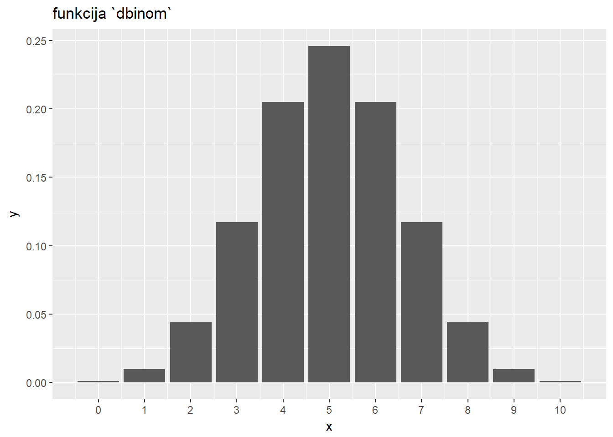

13 Statističko programiranje, razdiobe i simulacije
R se između ostalog definira kao jezik za “statističko programiranje” što znači da je jedna od njegovih osnovnih funkcija omogućiti provođenje statističkih analiza. Za razliku od drugih programskih jezika, za R se često kaže da je stvoren “od statističara, za statističare”, što znači da usprkos činjenici da je R kao jezik uvelike napredovao i evoluirao od svojih početaka kao izvedenice jezika S, statistika je i dalje u srži samog jezika a R kao takav sadrži iznimno bogatu podršku orijentiranu upravo statističarima i njihovim potrebama.
Cilj lekcije koja slijedi nije naučiti čitatelja statistiku. Budući da se radi o kompleksnom i relativno zahtjevnom znanstvenom polju za bilo kakav svrsishodan pregled trebalo bi daleko više prostora od onoga koji imamo ovdje na raspolaganju. Ideja lekcije jest primarno prikazati funkcije rada sa razdiobama, objasniti osnove provedbe simulacija te objasniti neke osnovne metode deskriptivne i inferencijalne statistike uz naglasak na njihovo provođenje kroz programski jezik R. Čitatelji koji nisu upoznati sa statistikom mogu lekciju koristiti kao prvi korak prema upoznavanju svijeta statistike, dok oni koji upravljaju znanjem barem osnovnih statističkih metoda mogu saznati kako neke poslove (koje su možda obavljali uz pomoć nekih drugih alata) mogu izvršavati programski uz pomoć podrške koju nudi jezik R.
Kao puno opsežniji uvod u statistiku snažno preporučujemo knjigu “OpenIntro Statistics” (Diez, Barr, and Çetinkaya-Rundel 2015). Važno je napomenuti da knjiga ima i svoj prateći CRAN paket, zvan ‘openintro’, koji omogućuje paralelno čitanje knjige i rješavanje zadanih problema direktno u R-u na istim podatkovnim skupovima koji se referenciraju u knjizi.
13.1 Rad sa razdiobama vjerojatnosti u jeziku R
U ovom dijelu lekcije prikazat ćemo podršku jezika R za rad sa različitim razdiobama vjerojatnosti. Važno je naglasiti da se ovdje nećemo baviti temeljitim pregledom teorije vezanim uz pojmove razdiobe vjerojatnosti diskretne i kontinuirane slučajne varijable (već spomenuti izvor “OpenIntro Statistics” može pružiti vrlo kvalitetan uvod ove tematike). Cilj lekcije koja slijedi primarno je prikazati što jezik R - ili konkretnije paket stats - nudi kao podršku za lak i učinkovit rad sa razdiobama.
Pojam razdiobe vjerojatnosti predstavlja funkciju koja opisuje vjerojatnost pojave nekog slučajnog događaja. Tako kod bacanja novčića imamo dva moguća ishoda - “pismo” ili “glava”, a ako je novčić regularan vjerojatnost pojedinog ishoda jest 0.5, tj. 50%. Zbroj brojeva kod bacanja dvije kockice može biti od 2 do 12, pri čemu svi ishodi nemaju istu vjerojatnost; npr. broj 7 ima najveću vjerojatnost (17%) dok 2 i 12 imaju najmanju (samo 3%).
Možemo razlikovati diskretne i kontinuirane razdiobe vjerojatnosti. Najveća razlika među njima jest ta što kod kontinuiranih razdiobi slučajna varijabla koju opisuju teoretski može poprimiti jednu od beskonačnog broja mogućih vrijednosti tako da ne možemo pričati o vjerojatnosti konkretnog ishoda; zbog toga kod kontinuiranih razdioba pričamo o vjerojatnosti da varijabla bude manja ili jednaka nekoj vrijednosti.
Postoji veliki broj razdioba vjerojatnosti koje nam mogu poslužiti u različitim scenarijima. Binomna razdioba opisuje vjerojatnost uočavanja nekog događaja u eksperimentu kojeg ponavljamo određeni broj puta (npr. vjerojatnost da u 10 bacanja novčića dobijemo pismo 8 puta). Geometrijska razdioba opisuje vjerojatnost broja ponavljanja nekog eksperimenta dok ne dočekamo neki ishod ishoda (npr. vjerojatnost da se prvo “pismo” pojavi tek u petom bacanju novčića). Konačno, možda najpoznatija razdioba je Gaussova ili normalna razdioba koja se često pojavljuje u prirodi i koju statističari vrlo često koriste za potrebe inferencijalne statistike.
Poznavanje funkcija za rad sa različitim razdiobama može nam uvelike pomoći u različitim scenarijima. Na sreću, ne moramo poznavati veliki broj razdiobi niti u detalje učiti matematičku podlogu svake od njih. Dovoljno je početi sa nekoliko osnovnih razdiobi (npr. normalna i uniformna) a potom polako širiti znanje o ostalim razdiobama kada se suočimo sa problemima gdje se one mogu pokazati korisnima. Jezik R nam ovdje prilično pomaže budući da koristi jedinstven predložak za podršku svim funkcijama razdiobe koje imamo na raspolaganju tako da kad naučimo upravljati podrškom za jednu razdiobu imamo kvalitetnu podlogu za korištenje bilo koje druge razdiobe, jednom kad se upoznamo s njenim specifičnostima i scenarijima uporabe.
Broj razdiobi koje imaju ugrađenu podršku u jeziku R je prilično velik. Popis razdiobi koje imamo na raspolaganju - ne računajući dodatne CRAN pakete! - možemo dobiti naredbom:
help(Distributions)U pravilu za svaku raspodjelu imamo na raspolaganju četiri funkcije koje prate isti uzorak imenovanja - funkcije slijede naziv distribucije (npr. norm za normalnu razdiobu, unif za uniformnu, binom za binomnu i sl.). Ovom nazivu daje se prefiks od jednog slova kako slijedi:
d- za funkciju gustoće razdiobep- za funkciju razdiobe (kumulativna funkcija)q- za funkciju kvantila (inverz od funkcije razdiobe)r- za nasumično generiranje jedne ili više varijabli iz odabrane razdiobe
Svaka od ovih funkcija prima parametre specifične za njenu funkcionalnost (tako funkcija za nasumični odabir varijabli iz razdiobe prima parametar n koji joj daje informaciju broju slučajnih varijabli koje želimo generirati) te parametre specifične za tu razdiobu (tako sve funkcije za normalnu razdiobu primaju aritmetičku sredinu i standardnu devijaciju tj. parametre mean i sd, geometrijska razdioba traži vektor vjerojatnosti prob, a Poissonova parametar lambda).
U nastavku ćemo se (uglavnom) usredotočiti na normalnu (Gaussovu) razdiobu, budući da se radi o poznatoj, sveprisutnoj razdiobi s koju ćemo i najčešće susretati u praksi. No bitno je napomenuti da će većina stvari prikazanih na normalnoj razdiobi biti primjenjiva i na druge razdiobe, obzirom na činjenicu da su pripadajuće R-ove funkcije za rad sa razdiobama dizajnirane prema istom, gore prikazanom predlošku. Za normalnu razdiobu tako imamo funkcije dnorm, pnorm, qnorm i rnorm. Potonju smo već upoznali u primjerima u kojima smo generirali vektor slučajnih vrijednosti iz normalne razdiobe. Pogledajmo u nastavku kako nam i preostale tri mogu poslužiti u praksi.
Već smo rekli da funkcije normalne razdiobe primaju parametre mean i sd kojima definiramo aritmetičku sredinu i standardnu devijaciju normalne razdiobe s kojom želimo raditi. Ukoliko te parametre ne navedemo pretpostaviti će se razdioba sa sredinom 0 i devijacijom 1.
Počnimo sa funkcijom pnorm zbog njene relativno lake interpretacije. Ako pretpostavimo neku normalnu razdiobu i neku proizvoljno odabranu vrijednost x, funkcija pnorm odgovara na pitanje “Kolika je vjerojatnost da slučajno odabrani broj iz odabrane normalne razdiobe bude manji (ili jednak) od x”? Podsjetimo se da kod razdioba kontinuiranih varijabli nikad ne možemo samo postaviti pitanje o vjerojatnosti pripadanja broja nekom intervalu, budući da zbog prirode kontinuiranih brojeva mogućih opcija ima beskonačno tako da je vjerojatnost pojave točno odabranog broja infinitezimalno mala.
Zadatak 13.1 - funkcija ‘pnorm’
# pretpostavimo normalnu razdiobu sa sredinom 50 i std. devijacijom 10
# kolika je vjerojatnost da slučajno odabrani broj iz ove razdiobe
# bude manji ili jednak 10, 25, 50, 75 ili 100?x <- c(10, 25, 50, 75, 100)
pnorm(x, mean = 50, sd = 10) %>% round(2)## [1] 0.00 0.01 0.50 0.99 1.00Ukoliko želimo vjerojatnost da je slučajni broj veći od zadanog broja, možemo postaviti parametar lower.tail = FALSE.
Funkciju pnorm možemo koristiti i za vizualizaciju funkcije razdiobe korištenjem već poznatih metoda iz paketa ggplot2 (samo moramo prvo prirediti odgovarajući podatkovni okvir, budući da funkcije tog paketa očekuju da podaci dolaze upravo u takvoj podatkovnoj strukturi).
Zadatak 13.2 - vizualizacija funkcije razdiobe
x <- seq(0, 100, 0.5)
df <- data.frame(x = x, y = pnorm(x, mean = 50, sd = 10))
# nacrtajte točkasti graf podatkovnog okvira `df`ggplot(df, aes(x, y)) + geom_point()Funkcija qnorm predstavlja inverz funkcije pnorm tj. za zadanu vjerojatnost i neku normalnu razdiobu funkcija vraća vrijednost koja se nalazi “na granici” te vjerojatnosti. To znači da prosljeđivanjem nekog proizvoljnog postotka funkciji možemo dobiti točno određenu vrijednost koja se nalazi na tako odabranom “percentilu”.
Zadatak 13.3 - funkcija ‘qnorm’
# ako pretpostavimo normalnu razdiobu sa sredinom 500 i std. devijacijom 20
# koja se vrijednost nalazi na 1., 25., 50., 75. i 99.-om percentilu?x <- c(0.01, 0.25, 0.50, 0.75, 0.99)
qnorm(x, 500, 20)## [1] 453.4730 486.5102 500.0000 513.4898 546.5270Funkcija dnorm nam za odabranu vrijednost x i neku normalnu razdiobu vraća iznos funkcije gustoće razdiobe. Ona se iznimno često koristi za vizualizaciju neke razdiobe.
Zadatak 13.4 - funkcija ‘dnorm’
# n istom grafu prikažite funkcije gustoće razdiobe sa sljedećim parametrima
# - sredina: 50, st.dev: 5 (plava linija)
# - sredina: 50, st.dev: 20 (crvena linija)
# - sredina: 70, st.dev: 5 (zelena linija)
#
# NAPUTAK: koristite se vektorom `x` iz zadatka 5.1.2. kako bi napravili podatkovni okvir u kojem
# će stupci imati pripadajuće vrijenosti funkcija gustoća razdiobi
# potom grafu dodajte linijske geometrije u kojoj svaka koristi vlastitu estetiku `y`x <- seq(0, 100, 0.5)
df <- data.frame(x = x, y1 = dnorm(x, 50, 5), y2 = dnorm(x, 50, 20), y3 = dnorm(x, 70, 5))
ggplot(df, aes(x = x)) + geom_line(aes(y = y1), color = "blue") +
geom_line(aes(y = y2), color = "red") + geom_line(aes(y = y3), color = "green") Kada radimo sa realnim podacima kontinuiranog tipa, često želimo provjeriti odgovaraju li oni nekoj normalnoj razdiobi. Jedan od načina kako ovo izvesti jest uz pomoć histograma koje smo već spominjali u poglavlju o vizualizaciji te kojima ćemo se vratiti u poglavlju o deskriptivnoj statistici. Drugi način jest koristiti funkciju geom_density paketa ggplot2 koja će uz pomoć posebnog algoritma pokušati “pogoditi” funkciju razdiobe te ju vizualizirati na grafu.
Prikažimo kako uz pomoć spomenute funkcije vizualno provjeriti da li se skup vrijednosti nekih obzervacija ravna po nekoj normalnoj razdiobi.
Za iduće primjere generiramo po 1000 obzervacija:
- nasumično iz normalne razdiobe
- nasumično iz lijevo i desno nagnute razdiobe
- iz bimodalne razdiobe (razdiobe sa dva “vrha”)
Lijevo i desno nagnute razdiobe su razdiobe sa “dugim repovima” (orijentacija repa definira “nagnutost”, tj. “lijevo nagnuta” ima rep na lijevoj strani). Ove razdiobe stvoriti ćemo uz pomoć funkcije rsn paketa sn kojeg ovdje nećemo posebno objašnjavati (znatiželjni čitatelji detalje oko ovog paketa i spomenute funkcije mogu potražiti u dokumentaciji). Bimodalnu razdiobu stvorili smo jednostavnim kombiniranjem slučajnih vrijednosti iz dvije različite normalne razdiobe.
#library(sn) # ukoliko je potrebno
set.seed(123)
podaci_normal <- rnorm(1000, 170, 3)
podaci_lijevo<- rsn(1000, 175, -1, 15)
podaci_desno <- rsn(1000, 163, 2, 10)
podaci_bimodal <- c(rnorm(700, 170, 5), rnorm(300, 120, 10))
df <- data.frame(x = 1:1000, normal = podaci_normal, lijevo = podaci_lijevo,
desno = podaci_desno, bimodal = podaci_bimodal )Uz pomoć već spomenute funkcije geom_density možemo vizualizirati funkcije gustoće razdiobe vjerojatnosti naših nasumično odabranih varijabli. Grafove ćemo zbog lakše usporedbe složiti u matricu 2 x 2 uz pomoć funkcije grid.arrange iz paketa gridExtras.
g1 <- ggplot(df, aes(normal)) + geom_density() + labs(x = "", title = "Normalna") + xlim(c(160, 180))
g2 <- ggplot(df, aes(lijevo)) + geom_density() + labs(x = "", title = "Lijevo nagnuta") + xlim(c(170, 176))
g3 <- ggplot(df, aes(desno)) + geom_density() + labs(x = "", title = "Desno nagnuta") + xlim(c(160, 170))
g4 <- ggplot(df, aes(bimodal)) + geom_density() + labs(x = "", title = "Bimodalna") + xlim(c(90, 190))
grid.arrange(g1, g2, g3, g4, nrow = 2, ncol = 2)
Za provjeru “normalnosti” često se koristi i tzv. “QQ graf” (od engl. quantile-quantile). Ovaj graf radi na sljedeći način: obzervacije se poredaju na jednu os prema svojoj vrijednosti dok na drugu os stavljamo njihovu očekivanu Z-vrijednost (engl. Z-score) koji predstavlja “udaljenost od sredine po broju standardnih devijacija”). Kod normalne razdiobe QQ graf leži na dijagonali grafa, dok se odstupanje od normalne razdiobe očituje u “izvijenosti” grafa tj. odstupanju od “pravca normalnosti”
Pogledajmo kako izgledaju QQ-grafovi naših razdiobi (koristimo ggplot i funkciju geometrije geom_qq):
#library(gridExtras) # ukoliko je potrebno
g1 <- ggplot(df, aes(sample = normal)) + geom_qq() + labs(title = "Normalna")
g2 <- ggplot(df, aes(sample = lijevo)) + geom_qq() + labs(title = "Lijevo nagnuta")
g3 <- ggplot(df, aes(sample = desno)) + geom_qq() + labs(title = "Desno nagnuta")
g4 <- ggplot(df, aes(sample = bimodal)) + geom_qq() + labs(title = "Bimodalna")
grid.arrange(g1, g2, g3, g4, nrow = 2, ncol = 2)
Ovdje završavamo priču o razdiobama. Ponovimo da prikazane funkcije imaju svoje korespondentne alternative za niz drugih razdiobi, pa tako npr. Poissonova razdioba ima funkcije dpois, ppois, qpois i rpois s kojima radimo vrlo slično prikazanim metodama normalne razdiobe, vodeći naravno računa o specifičnostima odabrane razdiobe (kao što smo već rekli, Poissonova razdioba očekivano nema parametre mean i sd već samo parametar lambda).
13.2 Simulacije
Jezik R vrlo je pogodan za stvaranje raznovrsnih simulacija. Osnovni mehanizmi provođenja simulacija su funkcija sample te porodica funkcija razdiobi spomenuta u prethodnom poglavlju, točnije funkcije iz navedene porodice sa prefiksom r koje omogućuju nasumični odabir iz zadane razdiobe.
Funkciju sample smo već upoznali budući da se radi o vrlo praktičnoj funkciji za scenarije koji zahtijevaju slučajni odabir elemenata nekog vektora. Puni potpis ove funkcije izgleda ovako:
sample(x, size, replace = FALSE, prob = NULL)gdje je x vektor iz kojeg odabiremo vrijednosti, size broj vrijednosti koje želimo odabrati, replace zastavica koja opisuje da li se vrijednosti mogu ponavljati te konačno vektor probs pomoću kojeg zadajemo vjerojatnosti odabira pojedinih elemenata. Po default-u svi elementi imaju jednake vjerojatnosti, a ukoliko koristimo ovaj parametar moramo voditi računa da broj elemenata odgovara broju elemenata originalnog vektora; vjerojatnosti ne moraju imati zbroj 1 budući da će ih R skalirati prije uporabe (tako da ih više možemo tretirati kao “težine”).
Podsjetimo se kako radi sample funkcija na vrlo jednostavnom primjeru Monte Carlo simulacije bacanja novčića (“Monte Carlo” simulacija u pravilu znači ponavljanje nekog scenarija veliki broj puta uz pomoć računalnog algoritma kako bi se mogli donijeti određeni zaključci o navedenom scenariju, npr. glede vjerojatnosti pojave nekog događaja).
Zadatak 13.5 - funkcija ‘sample’
set.seed(1234)
# napišite funkciju `baciNovcic(n)` koja će vratiti vektor duljine `n` sa nasumično
# odabranim vrijednostima 0 (pismo) i 1 (glava)
# bacite novčić 10, 100, 1000 i 100,000 puta te ispišite postotak slučajeva kada je ispala "glava"baciNovcic <- function(n)
sample(c(0,1), n, replace = T)
baciNovcic(10) %>% mean
baciNovcic(100) %>% mean
baciNovcic(1000) %>% mean
baciNovcic(100000) %>% mean## [1] 0.7
## [1] 0.39
## [1] 0.519
## [1] 0.50057Na sličan način možemo provjeriti kolika je vjerojatnost pojedinog zbroja kod bacanja dvije kockice. Ovdje nam nije dosta jedan poziv funkcije sample, već trebamo zbroj dva poziva te funkcije kojeg ćemo računati velikih broj puta. Jedno od mogućih rješenja kako ovo isprogramirati jest uz pomoć petlje, no budući da znamo kako je u jeziku R poželjno izbjeći petlje ukoliko je to moguće, preporučljivije je koristiti funkciju replicate:
replicate(n, expr, simplify = "array")Ova funkcija uzima izraz expr i ponavlja ga n puta, pri čemu slaže međurezultate u prikladnu strukturu (ukoliko pogledamo dokumentaciju, uvidjet ćemo da je ova funkcija zapravo izvedenica funkcije sapply).
Zadatak 13.6 - funkcija ‘replicate’
set.seed(1234)
# napravite funkciju `baci2kockice(n)` koja vraća vektor od n elemenata
# gdje je svaki element zbroj rezultata jednog bacanja dvije kockice
# ispišite vjerojatnosti svakog mogućeg zbroja za 100, 1000 i 1,000,000 bacanja kockicebaci2kockice <- function(n)
replicate(n, sample(1:6, 1) + sample(1:6, 1))
table(baci2kockice(100)) / 100
table(baci2kockice(1000)) / 1000
round(table(baci2kockice(1000000)) / 1000000, 3)##
## 2 3 4 5 6 7 8 9 10 11 12
## 0.03 0.06 0.09 0.16 0.10 0.20 0.14 0.06 0.12 0.03 0.01
##
## 2 3 4 5 6 7 8 9 10 11 12
## 0.028 0.052 0.072 0.110 0.157 0.186 0.139 0.111 0.070 0.048 0.027
##
## 2 3 4 5 6 7 8 9 10 11 12
## 0.028 0.056 0.084 0.111 0.139 0.167 0.139 0.111 0.083 0.056 0.028Ponekad želimo imati zapis svih provedenih simulacija. Npr. recimo da želimo 1000 puta ponoviti simulaciju bacanja kockice 100 puta te da sve rezultate želimo imati trajno pohranjene kako bi nad njima mogli raditi različite izračune. Za ovo nam je pogodno koristiti matricu dimenzija 1000 x 100 gdje svaki redak predstavlja jednu simulaciju od 100 bacanja.
Već smo prikazali funkciju replicate koja će u slučaju da dani izraz expr vraća jednu vrijednost kao konačni rezultat vratiti vektor. Ukoliko expr vraća vektor konzistentne duljine replicate će vratiti matricu. Potencijalni problem nam može predstavljati činjenica da će replicate rezultate poredati “po stupcima”, tako da je uputno njezin rezultat prije daljnjeg korištenja transponirati uz pomoć funkcije t.
Zadatak 13.7 - matrica kao rezultat funkcije ‘replicate’
set.seed(1234)
# 1000 puta ponovite simulaciju bacanja kockice 100 puta
# rezultate pohranite u varijablu `rez`
# koristite funkciju `replicate` čiji rezultat ćete transponirati
# budite oprezni ako koristite ternarni operator (razmislite zašto!)replicate(1000, sample(1:6, 100, T)) %>% t -> rez Zadatak 13.8 - vizualizacija rezultata simulacije
# nacrtajte razdiobu suma bacanja dobivenih u simulacijama pohranjenim u varijabli `rez`
# za računanje sumi koristite funkciju `apply` ili `rowSums`
# u varijablu `prosjSum` upišite prosječnu sumu zaokruženu na 2 decimale
# za crtanje razdiobe koristite `ggplot` i `geom_density`
# dodajte crvenu vertikalnu liniju na sredini uz pomoć fukcije `geom_vline`
# (estetika `xintercept` postavljena na `prosjSum`)
# i iznos sredine crvene boje uz pomoć funkcije `geom_text`
# ( parametar `label` postavljen na `prosjSum`, parametri `x` i `y` uz liniju)df <- data.frame(x = 1:1000, y = rowSums(rez))
prosjSum <- mean(df$y)
ggplot(df, aes(y)) + geom_density() + geom_vline(aes(xintercept = prosjSum), color = "red") +
geom_text(x = prosjSum + 6, y = 0.0015, label = round(prosjSum,2), color = "red")Pokušajmo sada uz pomoć Monte Carlo simulacije izračunati vjerojatnost da u 10 bacanja novčića 8 puta novčić padne na “pismo”. Jedan od načina jest sličan već prikazanima - napravimo funkciju koja uz pomoć funkcije sample simulira bacanje novčića te potom pozivamo funkciju veliki broj puta i računamo koliko puta smo osam puta dobili “pismo”. No postoji i jednostavniji način.
Jezik R sadrži funkciju rbinom, koja daje vektor proizvoljne duljine sa vrijednostima dobivenim nasumično iz zadane binomne razdiobe. Ukoliko ne znamo, binomna razdioba zasnovana je na događaju čija je vjerojatnost pojave p te opisuje kolika je šansa da u n slučajeva događaj uočimo neki zadani broj puta. U našem slučaju vjerojatnost pojave događaja je 50%, eksperiment ponavljamo 10 puta a traženi broj puta je 8. Pokušajmo prvo dobiti vjerojatnost uz pomoć slučajnih vrijednosti generiranih iz binomne razdiobe.
Zadatak 13.9 - funkcija ‘rbinom’
set.seed(1234)
# stvorite 100, 1000 i 1000,000 slučajnih vrijednosti
# iz binomne razdiobe sa 10 ponavljanja i vjerojatnosti 0.5
# izračunajte vjerojatnost da se događaj pojavio točno 8 puta(rbinom(100, 10, 0.5) == 8) %>% mean
(rbinom(1000, 10, 0.5) == 8) %>% mean
(rbinom(1000000, 10, 0.5) == 8) %>% mean## [1] 0
## [1] 0.064
## [1] 0.043845Točnu vjerojatnost možemo odrediti matematički, ali i uz pomoć funkcije dbinom koja radi slično funkciji dnorm, s time da kod diskretne slučajne varijable možemo direktno iz funkcije gustoće očitati vjerojatnost.
Funkciju dbinom možemo i vizualizirati uz pomoć stupčanog grafa. Budući da visinu stupića ne računamo, već direktno čitamo, za parametar stat moramo staviti identity.
# izgled funkcija dbinom za 10 bacanja novčića
df <- data.frame(x <- 0:10, y <- dbinom(x, 10, 0.5))
ggplot(df, aes(x, y)) + geom_bar(stat = "identity") + labs(title = "funkcija `dbinom`") +
scale_x_continuous(breaks = 0:10)
Zadatak 13.10 - funkcija ‘dbinom’
# uz pomoć funkcije `dbinom` izračunajte vjerojatnost da u 10 bacanja novčića
# dobijemo "pismo" točno 8 puta
# usporedite s rezultatom dobivenim simulacijomdbinom(8, 10, 0.5)## [1] 0.04394531U ovome dijelu saznali smo neke osnovne alate jezika R za provođenje simulacija:
- kod simulacija se uglavnom koristimo funkcijom
samplete funkcijama razdiobi sa prefiksomr - funkcija
replicateje vrlo korisna za ponavljanje velikog broja simulacija i pomaže nam da izbjegnemo korištenje petlje (iako i petlje mogu biti korisne i ne treba ih u potpunosti zanemariti) - matematičke metode te
dipfunkcije razdiobi nam često mogu pomoći kod izračuna i ocjene vjerojatnosti dobivene simulacijom
Simulacijama ćemo se vratiti u poglavlju o inferencijalnoj statistici, budući da one predstavljaju jednu od metoda provjere koliko je neka uočena pojava “vjerojatna” ako pretpostavimo da pripada određenoj razdiobi. Za više informacija o simulacijama te njihovoj uporabi za potrebe statistike možemo preporučiti knjigu “IntroStat with Randomization and Simulation” koja je otvoreno dostupna na ovoj poveznici. Ova knjiga okvirno prolazi kroz iste teme kao i knjiga “OpenIntro Statistics”, no s većim naglaskom na simulacije i korištenje nasumično odabranih vrijednosti uz pomoć jezika R.

Programirajmo u R-u by Damir Pintar is licensed under a Creative Commons Attribution-NonCommercial-NoDerivatives 4.0 International License.
Based on a work at https://ratnip.github.io/FER_OPJR/
References
Diez, D.M., C.D. Barr, and M. Çetinkaya-Rundel. 2015. OpenIntro Statistics. OpenIntro, Incorporated. https://books.google.hr/books?id=xNMWswEACAAJ.